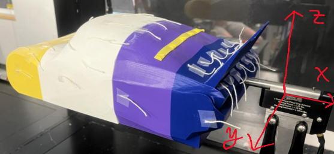
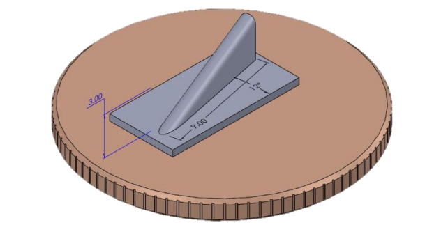
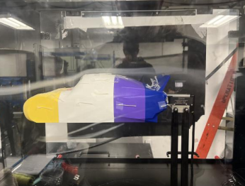
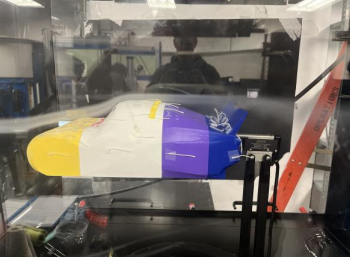
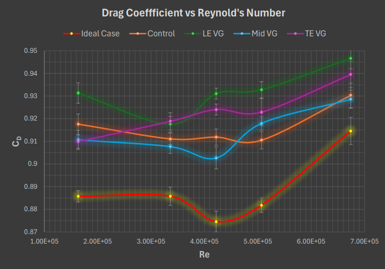

AERODYNAMICS
Vortex Generator Optimization
Wind tunnel testing, flow visualization, and drag analysis for vortex generator placement on a stock-car model.
Overview
This project investigated how vortex generator placement affects aerodynamic drag on a NASCAR-style stock-car model. The goal was to determine whether small, non-intrusive aerodynamic devices could reduce drag by changing boundary layer behavior and delaying flow separation.
Our team tested multiple vortex generator locations in a low-speed wind tunnel using both qualitative flow visualization and quantitative drag measurements. The final result showed that placement mattered more than just adding vortex generators. The ideal rear-mid placement reduced drag by about 3% on average compared to the no-VG control, while poor placements could increase drag.
Engineering Goal
Test whether vortex generators could reduce drag on a bluff-body vehicle model by controlling flow separation and reducing wake effects.
Experimental Objective
Vortex generators are used to energize the boundary layer by intentionally introducing small vortices into the flow. This can help attached flow stay on the body longer, but it can also increase drag if the generators are placed poorly or energize the flow too early.
Because of that tradeoff, the experiment focused on placement. We compared a no-VG control case against vortex generators placed at the front, middle, rear, and an ideal rear-mid location selected from flow visualization observations.
Flow Visualization
Used smoke trails and surface tufts to observe separation behavior, wake size, and flow attachment.
Drag Measurement
Used the wind tunnel force measurement setup to record drag force and calculate drag coefficient.
Placement Study
Compared no VG, front VG, middle VG, rear VG, and ideal rear-mid VG configurations.
Reynolds Sweep
Tested across five Reynolds numbers to compare drag trends over a range of tunnel speeds.
Wind Tunnel Setup
The experiment used a roughly 1/12-scale stock-car model mounted in an open-circuit wind tunnel. The model was 3D printed with a pistol-grip mounting slot and surface tufts were attached to help visualize the flow over the body.
Drag force was measured with the pistol-grip setup over a 5 second period at a 100 Hz sampling rate. We tested five tunnel speeds corresponding to Reynolds numbers of approximately 1.6 × 10⁵, 3.28 × 10⁵, 4.13 × 10⁵, 4.95 × 10⁵, and 6.58 × 10⁵.

Wind tunnel setup with the 3D-printed stock-car model mounted on the pistol grip, surface tufts for flow visualization, and vortex generator test locations.
Vortex Generator Geometry
The vortex generators used a small triangular geometry based on an idealized design from aerodynamic literature. The test piece consisted of a strip of six vortex-generator pairs that could be placed at different locations on the model.
Keeping the geometry consistent allowed the experiment to focus on the effect of placement rather than changing the size or shape of the vortex generators between trials.

Vortex generator geometry used for testing, shown with a penny for scale reference.
Flow Visualization
Flow visualization helped us see why the vortex generator location mattered. The control case showed the baseline flow behavior without vortex generators, while the ideal rear-mid placement produced more controlled flow behavior near the rear of the model.
The goal was not just to create turbulence anywhere on the car. The useful case was the one where the vortices helped control separation and reduce the wake without adding unnecessary drag earlier along the body.

Control case with no vortex generators, used as the baseline flow visualization condition.

Ideal/rear-mid vortex generator placement showing more controlled flow behavior near the rear of the model.
Data Reduction & Scaling
The raw force measurement from the wind tunnel was not enough by itself because drag force changes with tunnel speed. To compare the different vortex generator configurations fairly, the measured drag force was non-dimensionalized into coefficient of drag using dynamic pressure and model reference area.
Drag Coefficient Calculation
CD was calculated from measured drag force, freestream dynamic pressure, and the model cross-sectional area. This made it possible to compare the control and vortex-generator cases across multiple Reynolds numbers instead of only comparing raw force values.
We also evaluated power loss from drag by combining the drag force with freestream velocity. This connected the wind tunnel measurements back to the vehicle performance question: whether a small aerodynamic modification could reduce the effective power lost to drag.
Reynolds Number
Used to compare flow behavior across tunnel speeds and account for scale effects between the model and full vehicle.
Coefficient of Drag
Calculated from measured drag force, dynamic pressure, and reference area to compare configurations.
Power Loss
Estimated from drag force and freestream velocity to connect aerodynamic drag to vehicle performance.
Uncertainty
Error bars were included in the drag plot to show variation across measured force data and tunnel conditions.
Drag Results
The drag coefficient results showed that the ideal rear-mid placement consistently produced the lowest drag trend across the Reynolds number sweep. This placement likely worked best because it introduced vortices late enough to influence the separated flow region without adding unnecessary losses over the entire front half of the body.
In contrast, the front-mounted vortex generators increased drag. This made sense because they energized the boundary layer too early, increasing skin-friction effects before producing useful wake reduction. The main result was that vortex generators are not automatically beneficial. Their placement has to match the flow behavior of the body.

Coefficient of drag versus Reynolds number for the control and vortex generator placement cases. The ideal/rear-mid placement produced the lowest CD trend.
Key Result
The ideal rear-mid vortex generator placement reduced drag by approximately 3% on average compared to the no-VG control, while front placement increased drag.
What I Worked On
- Worked with a four-person team to design and run a vortex generator placement experiment.
- Researched vortex generator applications and adapted the geometry for wind tunnel testing.
- Helped prepare the 3D-printed stock-car model with surface tufts and vortex generator test locations.
- Conducted wind tunnel testing across multiple Reynolds numbers.
- Used smoke and surface tufts to compare flow separation and wake behavior across configurations.
- Measured drag force and calculated drag coefficient trends for each vortex generator placement.
- Compared quantitative drag data with qualitative flow visualization to identify the best placement.
Technical Highlights
- Tested no-VG, front VG, middle VG, rear VG, and ideal rear-mid VG configurations.
- Used Reynolds number scaling to compare aerodynamic behavior across multiple wind tunnel speeds.
- Calculated coefficient of drag from measured drag force, dynamic pressure, and model reference area.
- Evaluated power-loss effects using drag force and freestream velocity.
- Showed that vortex generator placement can either reduce or increase drag depending on flow behavior.
Tools Used
Low-speed wind tunnel, 3D-printed model testing, vortex generators, smoke visualization, surface tufts, pistol-grip force measurement, Reynolds number scaling, drag analysis, coefficient of drag calculations, experimental aerodynamics
Engineering Takeaways
This project helped me understand why aerodynamic devices cannot be judged in isolation. The same vortex generator geometry helped in one location and hurt in another. The useful result came from matching the device placement to the actual flow behavior over the model.
The biggest takeaway was learning how to combine qualitative and quantitative testing. The smoke and tufts helped explain what the flow was doing, while the drag coefficient data showed whether those visual changes actually improved performance.